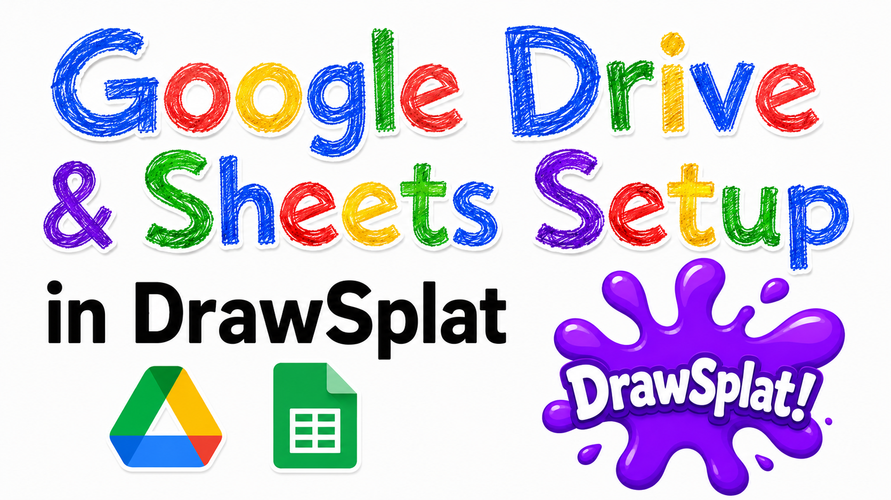

Setup Guide
DrawSplatTM Google Drive and Sheets Setup
These steps configure the optional Google Apps Script backend for Drive saves, cloud rooms, templates, and turn-ins.
Choose the right Google connection
This guide is for the optional Apps Script + Drive + Sheets backend. District Google sign-in for MariaDB/MySQL classrooms is a different connection: follow the district Google sign-in instructions. You do not need Apps Script to save district boards or submit district assignments.
School Workspace policies and Apps Script quotas govern access and capacity. Ask your Workspace administrator to approve the intended deployment audience; verify access with an actual student account before relying on it.
1. Create the Google Backend
- Create a Google Sheet named DrawSplatTM Saves.
- Open Extensions > Apps Script.
- Replace the starter code with the current apps-script/Code.gs from the same release as your whiteboard.
- Save the project.
- Run the
setup()function once. - Approve the requested Google Drive and Google Sheets permissions.
The setup function creates or prepares:
- a Drive folder named DrawSplatTM Saves
- a
Boardssheet - a
Roomssheet - a
Templatessheet - a
TurnInssheet
2. Deploy the Web App
- In Apps Script, choose Deploy > New deployment.
- Select Web app.
- Set Execute as to Me.
- Set Who has access to the narrowest option that works for your class or district.
- Deploy.
- Copy the deployed URL ending in
/exec, not the editor URL or development/devURL. - Paste the URL into DrawSplatTM under Options > Google integration > Script URL.
For a hosted classroom deployment, you can place that URL in DEFAULT_GOOGLE_SCRIPT_URL near the top of assets/js/app.js. That keeps students from needing a script= value in shared links.
Test, update, and administer the deployment
- Save the URL in Teacher Admin’s Google Drive + Sheets settings and choose Test Connection.
- Save a test board, reload, and reopen it. Then test a student link in the intended school account.
- For the Apps Script Compliance Console, set a unique
ADMIN_PASSCODEin Project Settings → Script Properties. Keep this server-side passcode private; it is separate from any Teacher Admin interface lock. - After changing
Code.gs, use Deploy → Manage deployments → Edit → New version → Deploy. Keeping the deployment preserves its URL; creating another deployment requires updating stored links.
See the Compliance Console guide for storage scope and operational checks, and Apps Script technical reference for script properties. Never publish passcodes in student links.
3. Teacher Classroom Workflow
- Open DrawSplatTM.
- Switch to Education Tools.
- Enable assignment mode.
- Create the panels needed for table groups.
- Add backgrounds, templates, prompts, or teacher-layer content.
- Enter a unique room name in Collaboration.
- Optionally enter a room password.
- Start Cloud Sync.
- Click Copy Student Link. DrawSplatTM generates the student URL for the current room and copies it to the clipboard.
- Share the copied link with students.
Each room name acts as a unique shared whiteboard instance. The generated student link includes role=student and the room name so students open directly into the correct shared board.
4. Student Workflow
Students open the copied link. The link uses role=student, which locks DrawSplatTM into student mode.
Students can add:
- sticky notes
- images
- drawings
- text
- Mermaid diagrams
- word clouds
Students cannot use the student link to:
- edit the Google Apps Script URL
- change panel backgrounds
- clear panels
- add panels
- edit teacher-layer objects
5. How Saving Works
Teacher saves initialize or update the full room board.
Student saves are merged by the Apps Script backend. The backend preserves:
- teacher panel backgrounds
- teacher-layer objects
- existing student-layer objects from other students
Room passwords are stored as salted SHA-256 hashes in the Google Sheet, not as plain text.
6. Security Notes
The room password is a classroom access gate, not a full identity system.
Google login and account-level access are controlled by the Apps Script deployment setting. For real student authentication, deploy the Web App using the narrowest access setting allowed by your school or district.